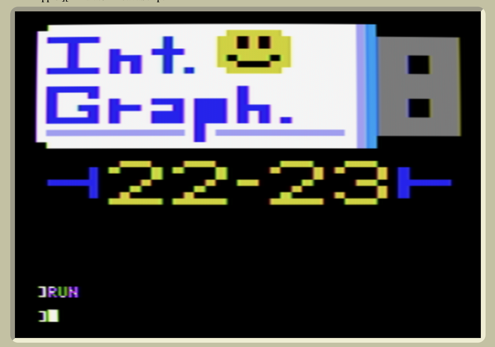

Below is my Class Logo project, completed in APPLESOFT BASIC II.
This was manually programmed with the following code: 10 GR 20 COLOR=15 30 FOR I = 0 TO 29 40 VLIN 0,19 AT I 50 NEXT I 55 COLOR=0 56 PLOT 0,0 57 PLOT 0,19 60 COLOR=2 70 HLIN 1,5 AT 2 80 VLIN 3,6 AT 3 90 HLIN 1,5 AT 7 100 VLIN 4,7 AT 7 110 VLIN 5,7 AT 9 120 PLOT 8,5 130 VLIN 2,7 AT 12 140 HLIN 11,13 AT 4 150 PLOT 14,7 155 COLOR=13 160 HLIN 18,22 AT 1 170 HLIN 18,22 AT 7 180 FOR COUNT = 2 TO 6 190 HLIN 17,23 AT COUNT 200 NEXT COUNT 205 COLOR=0 210 VLIN 2,3 AT 19 220 VLIN 2,3 AT 21 230 PLOT 18,5 240 PLOT 22,5 250 HLIN 19,21 AT 6 255 COLOR=2 260 HLIN 1,5 AT 10 270 HLIN 1,5 AT 15 280 HLIN 4,5 AT 13 290 VLIN 10,15 AT 1 300 PLOT 5,11 310 PLOT 5,14 320 VLIN 12,15 AT 7 330 HLIN 8,9 AT 13 340 HLIN 11,13 AT 12 350 HLIN 11,13 AT 14 360 HLIN 11,13 AT 15 370 PLOT 13,13 380 FOR P = 12 TO 15 390 HLIN 15,17 AT P 400 NEXT P 410 VLIN 16,18 AT 15 420 VLIN 10,15 AT 19 430 PLOT 20,13 440 VLIN 13,15 AT 21 450 PLOT 23,15 455 COLOR = 7 460 HLIN 1,13 AT 17 470 HLIN 17,28 AT 17 472 VLIN 0,19 AT 30 473 COLOR=6 475 VLIN 0,19 AT 31 477 COLOR =10 480 FOR I = 32 TO 39 490 VLIN 2,17 AT I 500 NEXT I 505 COLOR=0 507 HLIN 35,36 AT 5 510 HLIN 35,36 AT 6 520 HLIN 35,36 AT 7 530 HLIN 35,36 AT 12 540 HLIN 35,36 AT 13 550 HLIN 35,36 AT 14 560 COLOR=13 570 HLIN 8,10 AT 22 580 HLIN 14,16 AT 22 590 HLIN 23,25 AT 22 600 HLIN 29,31 AT 22 610 PLOT 7,23 620 VLIN 23,24 AT 11 630 PLOT 10,25 640 PLOT 9,26 650 PLOT 8,27 660 HLIN 7,11 AT 28 670 PLOT 13,23 680 VLIN 23,24 AT 17 690 PLOT 16,25 700 PLOT 15,26 710 PLOT 14,27 720 HLIN 13,17 AT 28 730 HLIN 19,20 AT 25 740 PLOT 22,23 750 VLIN 23,24 AT 26 760 PLOT 25,25 770 PLOT 24,26 780 PLOT 23,27 790 HLIN 22,26 AT 28 800 PLOT 28,23 810 VLIN 23,24 AT 32 820 HLIN 30,31 AT 25 830 VLIN 26,27 AT 32 840 PLOT 28,27 850 HLIN 29,31 AT 28 855 COLOR = 2 860 HLIN 1,5 AT 25 870 HLIN 38,34 AT 25 880 VLIN 23,27 AT 5 890 VLIN 23,27 AT 34